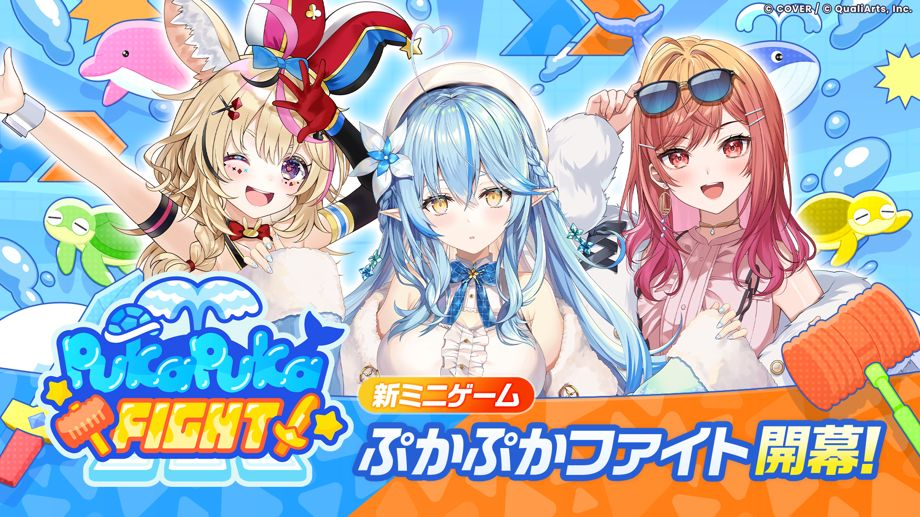
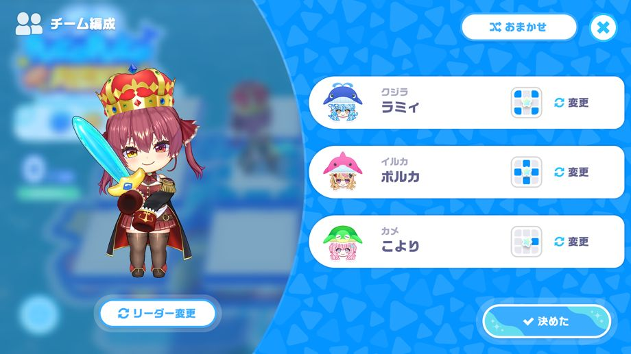
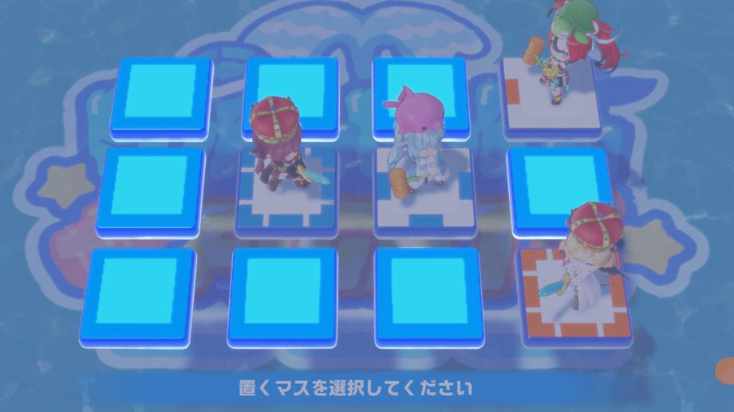
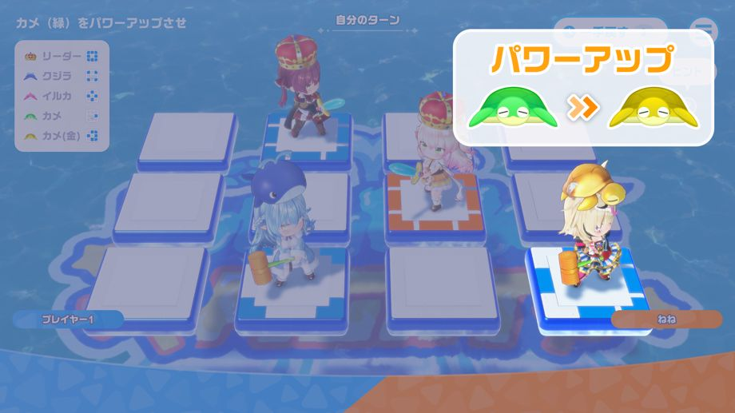
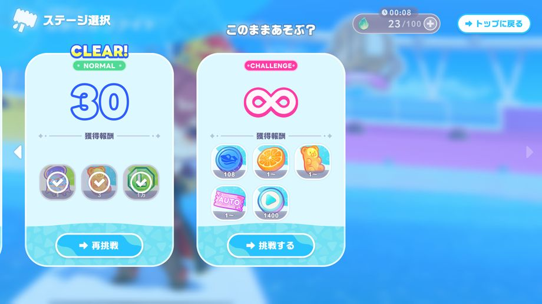
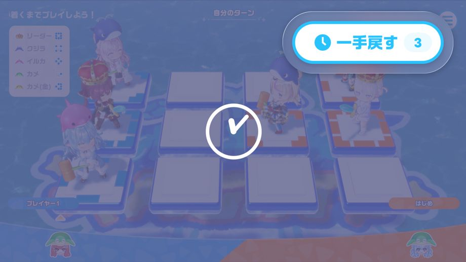
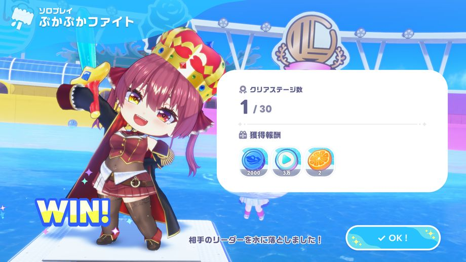

2026-11-25 11:00:00より、新ミニゲーム「ぷかぷかファイト」が開幕！
◆ミニゲーム追加日
2026-11-25 11:00:00〜
◆参加条件
エリアクエスト「ぷかっと浮かんでレッツファイト！」をクリア
※エリアクエスト「ぷかっと浮かんでレッツファイト！」は、メインクエスト3章「ソーダポップラグーン」をクリアすることで解放されます。
※マルチプレイのプライベートルームでは、メインクエスト1章4話「Mythical Connection」をクリアすることで遊ぶことができます。
新ミニゲーム「ぷかぷかファイト」概要

ぷかぷかファイトは、ホロメンたちを動かし、相手のリーダーを水に落として勝利を目指すミニゲームです。
リーダー以外の相手ホロメンは、水に落とすことで自分の仲間にでき自分のチームの一員として活用できます。
ソロプレイではNPCと、マルチプレイでは他のプレイヤーと対戦することができます。
勝利条件について

◆相手のリーダーを水に落とす
相手のリーダー（王冠のホロメン）を水に落とすことで勝利となります。
◆トライ
自分のリーダーを一番右の列の足場まで進めることで、「トライ」での勝利を目指すことができます。
到達した次のターンにリーダーが水に落とされなかった場合、勝利となります。
チーム編成について

ホロメンたちの帽子によって動ける方向が異なります。
リーダー・イルカ・クジラ・カメ（緑）の4つの役割に、ホロメンを編成することができます。
◆ホロメンの動き方
- リーダー：全方向に1マス移動できる
- イルカ：上下左右の4方向に1マス移動できる
- クジラ：斜めの4方向に1マス移動できる
- カメ（緑）：前方に1マス移動できる
- カメ（金）：斜め後ろ以外の6方向に1マス移動できる
ターン中の操作について

自分と相手が交互にホロメンを動かして対戦します。
- ホロメンを動かす：自分のホロメンを選択し、移動できる足場を選ぶことで動かすことができます。
- 仲間を配置する：仲間にしたホロメンを選択し、空いている足場に配置することができます。
※相手のホロメンがいる足場に移動すると、そのホロメンを水に落とすことができます。
カメのパワーアップについて

カメ（緑）は、一番右の列の足場まで移動するとカメ（金）にパワーアップします。
カメ（金）は、斜め後ろ以外の6方向に1マス移動することができます。
※仲間にしたカメ（緑）を一番右の列の足場に直接配置した場合は、パワーアップしません。
※カメ（金）が水に落とされると、カメ（緑）に戻ります。
ソロプレイについて

ソロプレイでは、NORMALとCHALLENGEの2つのモードを遊ぶことができます。
◆NORMAL
全30ステージに挑戦するモードです。
各ステージのホロメンに勝利すると、次のステージが解放されます。
◆CHALLENGE
NORMALをすべてクリアすると解放されるモードです。
挑戦するたびにホロメンたちの配置が変わり、いろいろな強さの対戦相手とのバトルを楽しむことができます。
「一手戻す」について

ソロプレイでは、「一手戻す」を使うことができます。
「一手戻す」ボタンを押すと、1つ前の自分のターンに戻すことができます。
※マルチプレイでは使用できません。
報酬について

報酬では、ソーダポップコインと、新しい釣り餌を獲得することができます。
◆NORMALの報酬
NORMALでは、各ステージを初めてクリアした時にクリア報酬を獲得することができます。
※再挑戦では、報酬は獲得できません。
◆CHALLENGE・マルチプレイの報酬
CHALLENGEとマルチプレイでは、勝敗に関わらず報酬を獲得することができます。
※マルチプレイのプライベートルームでは、報酬は獲得できません。
◆ミニゲームブーストについて
NORMAL・CHALLENGEでは、ミニゲームブーストの消費数は固定です。
マルチプレイでは、ミニゲームブーストの消費数を選ぶことができます。
マルチプレイでは、ミニゲームブーストの消費数に応じて、獲得できる報酬が増えます。
注意事項
- 開催期間および内容は予告なく変更する場合があります。
- NORMALの報酬は、ホロパスポートおよびホロメンボードによる報酬量アップの対象外です。